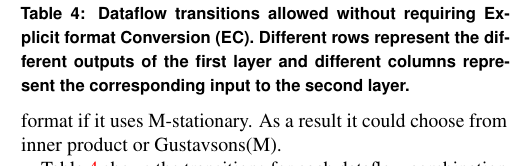
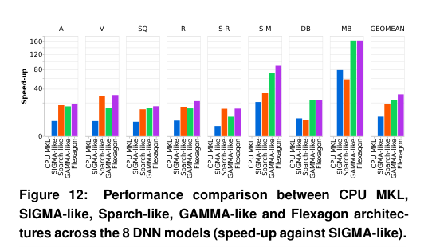
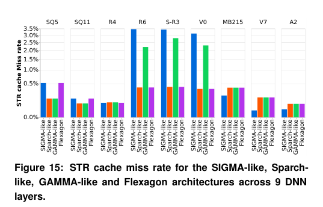
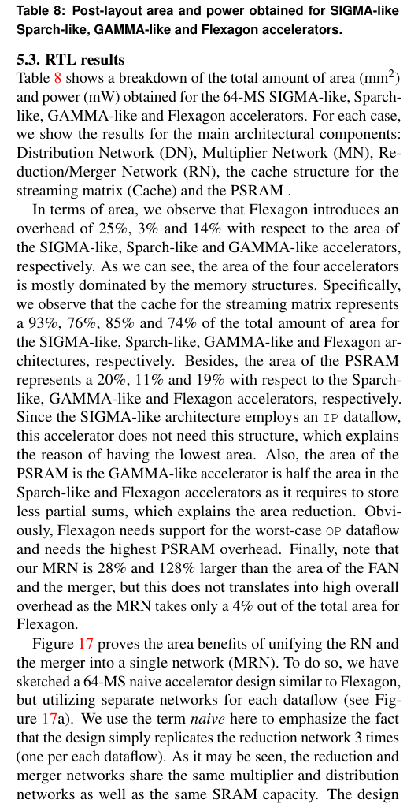

本报告由大模型自动生成，可能存在理解、归纳或数据转述错误；请以原论文为准。 Flexagon: A Multi-dataflow Sparse-Sparse Matrix Multiplication Accelerator for Efficient DNN ProcessingFrancisco Muñoz-Martínez, Raveesh Garg, Michael Pellauer, José Luis Abellán, Manuel E. Acacio, Tushar Krishna · Proceedings of the 28th ACM International Conference on Architectural Support for Programming Languages and Operating Systems, Volume 3 · 2023 · 原文 · PDF 报告模型：gemini-3.1-pro-preview / high 这篇文章介绍了一种名为 Flexagon 的新型深度神经网络（DNN）硬件加速器设计，主要针对日益普遍的稀疏-稀疏矩阵乘法（Sparse-Sparse Matrix Multiplication, 简称 SpMSpM）问题。以下将按论文的逻辑结构，逐章节详细解析其背景、设计方法、实验与结论。 1. 引言（Introduction）在现代深度神经网络（DNN）工作负载中，张量（多维数组）的“稀疏性”正成为一个重要的发展趋势。这里的稀疏性指的是矩阵或张量中包含大量零值。背景补充：在深度学习中，权重（Weights）的稀疏性通常来源于网络剪枝（Pruning，即人为移除不重要的连接），而激活值（Activations）的稀疏性则来源于非线性激活函数（如 ReLU 会将所有负数置为零）。因此，直接在硬件上实现仅对非零元素进行计算的稀疏矩阵乘法（SpMSpM），成为了定制化 DNN 加速器的重要优化目标。 为了利用这种稀疏性，现有的硬件加速器通常采用压缩格式（如 Bitmap、CSR、CSC）来存储和计算数据。这减少了内存占用和运算量，从而显著节省能耗。然而，文章指出一个核心问题：现有的最先进（SOTA）稀疏加速器（如 SIGMA、SpArch 和 GAMMA）在硬件实现上都采用了固定数据流（Static Dataflow）。在本文中，“数据流”指的是硬件执行矩阵乘法嵌套循环的具体顺序和空间映射方式，它决定了数据在存储器和计算单元之间的移动模式。现有的加速器通常被分类为采用内积（Inner Product, IP）、外积（Outer Product, OP）或 Gustavson 法（Row-wise-Product）数据流。 作者通过对多种具有不同稀疏度和大小的 DNN 模型（来自 MLPerf 基准测试等）进行分析后发现，没有任何一种单一的数据流能在所有模型甚至同一个模型的不同层中都保持最高效率。因为不同的层具有不同的维度、稀疏模式和稀疏度，这导致内存访问特征各异。基于这一观察，作者提出了 Flexagon：这是第一个能够根据每一层的具体特征，动态重新配置并执行最合适 SpMSpM 数据流的同构硬件加速器。 2. 背景（Background）在介绍具体设计前，作者首先明确了研究的数学对象、数据格式和不同数据流的具体定义。 2.1 压缩格式（Compression formats）本文讨论的 SpMSpM 操作计算公式为： 在这里，、 和 是二维张量（即矩阵），原文未说明其元素的具体含义和来源，单位原文未说明。下标 作为整体代表矩阵的维度，其中 、、 是标量整数，分别表示矩阵 的行数（或 的行数）、矩阵 的列数（或 的列数）以及 和 共享的内部维度（即 的列数和 的行数），单位原文未说明。由于这些矩阵通常是高度稀疏的，它们会被进行无损压缩。 本文重点关注两种常用的非结构化压缩格式：**CSR（Compressed Sparse Row，压缩稀疏行）**和 CSC（Compressed Sparse Column，压缩稀疏列）。
2.2 SpMSpM 数据流（SpMSpM dataflows）矩阵乘法本质上是一个三层嵌套的 for 循环，分别遍历独立维度 和 ，以及共享维度 。根据循环嵌套中最内层、最外层和中间层共同迭代的维度，作者定义了三种基本数据流，每种数据流根据独立维度（ 保持静止还是 保持静止）的不同，又可分为两种变体，共计六种。为了方便说明，文章以 -保持静止（M-stationary）为例进行解释：
3. Flexagon 设计（Flexagon Design）背景补充与系统全貌：为了理解接下来的微架构设计，我们需要先建立 Flexagon 的硬件全貌。Flexagon 是一个片上（On-chip）系统，其数据流向是从片外主存（DRAM）读取输入矩阵 A 和 B 到片上 L1 静态随机存取存储器（SRAM），然后通过片上网络（NoC）将数据分发给计算阵列（乘法器和加法器），计算出的部分和或最终结果再通过片上网络写回 L1 SRAM，最后传回 DRAM。本文讨论的是架构层（Architecture level）和微架构层（Microarchitecture level）的设计。 Flexagon 的执行分为四个阶段。第一个是离线阶段（软件/编译器完成），由编译器分析矩阵维度和稀疏模式，选择出最高效的数据流变体并生成配置信号；这属于软件做出的设计选择。接下来的三个阶段在硬件运行时发生：**静止阶段（Stationary phase）**将一部分矩阵数据加载到乘法器中保持不动；**流式阶段（Streaming phase）**将另一个矩阵的数据流式送入乘法器生成部分和；**合并阶段（Merging phase）**用于将生成的部分和进行累加求和（仅 OP 和 Gust 数据流需要，IP 会跳过此阶段）。 为了在一个同构的物理底座上支持上述全部六种数据流变体，作者设计了高度灵活的片上网络和定制化的内存层次结构。 3.1 片上网络（On-chip Networks）Flexagon 的计算核心包含三层可配置的片上网络（NoC）：
3.3 层间数据流的组合（Combinations of inter-layer dataflows）这里存在一个架构与编译器的协同设计。作者发现，如果强制在两层之间转换数据格式（例如前一层的输出是 CSR，下一层要求输入是 CSC），会导致巨大的开销（这种转换称为 Explicit Conversion, EC）。本文通过分析得出，-静止的数据流天然输出 CSR 格式，而 -静止的数据流天然输出 CSC 格式。因此，Flexagon 的编译器可以通过精心选择每一层是 -静止还是 -静止，确保上一层的输出格式恰好是下一层所需的输入格式（见原文表 4，绿色勾选表示无需转换的合法过渡），从而在不增加专门格式转换硬件的情况下，无缝衔接不同层的计算。  3.4 与 3.5 内存组织和控制器（Memory organization & Memory controllers）不同的数据流对内存的访问模式天差地别。如果使用传统的通用缓存，会因命中率极低而造成性能瓶颈。因此，Flexagon 在 L1 SRAM 层面针对矩阵 A、B、C 设计了三种完全不同的存储结构：
为了避免为 6 种数据流分配 30 个独立的内存控制器，作者在逻辑上统一了内存控制器，仅使用几个可配置的 tile 填充器（Tile filler）和读取器（Tile reader）来适配不同的访存模式，大幅节省了芯片面积。 4. 实验方法（Experimental Methodology）本节说明了作者如何验证 Flexagon 的性能和硬件开销。这里展示了计算机体系结构设计与 EDA（电子设计自动化）工具之间的典型跨层联系。
5. 结果（Results）5.1 端到端结果（End-to-end results）图 12（原文 Figure 12）展示了 8 个完整 DNN 模型的整体加速比。结果支持了文章最初的论点：没有一种固定数据流加速器能赢下所有测试。例如 Sparch-like 在视觉模型（如 Resnets-50）上表现较好，而 GAMMA-like 在自然语言处理模型（如 MobileBert）上表现更好。但是，由于 Flexagon 可以动态切换到最佳数据流，它在所有模型中都击败了这三种固定数据流加速器，平均速度分别提升了 4.59 倍（相较 SIGMA-like）、1.71 倍（相较 Sparch-like）和 1.35 倍（相较 GAMMA-like）。  5.2 逐层结果分析（Layer-wise results）为了解释上述结果，作者选取了 9 个代表性的单个计算层进行深入分析，并结合片上和片外内存流量的数据来阐明硬件现象的原因。 例如，在某些特定的层中（如矩阵 B 体积庞大达到 21.3 MiB），采用 OP 优先的 Sparch-like 和 GAMMA-like 架构会导致流式矩阵的 Cache 发生极高的 L1 缓存缺失率（Miss rate，图 15 显示 GAMMA-like 的缺失率达到 2.43%），进而引发大量向 DRAM 请求数据的片外流量（Off-chip traffic），导致性能严重下降。在这种情况下，Flexagon 会智能配置为 IP 数据流，在硬件上避免了合并部分和的过程，从而以最佳状态完成计算。  5.3 RTL 结果与开销分析（RTL results）这部分展示了之前提到的 EDA 综合和评估结果（原文 Table 8）。Flexagon 由于需要支持所有的最坏情况（包含复杂的 MRN 和最大的 PSRAM），其芯片总面积（5.28 ）比 SIGMA-like、Sparch-like 和 GAMMA-like 分别增加了 25%、3% 和 14%；总功耗（2998 ）也有所增加。 然而，作者做出了一个关键的设计权衡辩护：作者在图 17 中设计了一个“朴素（Naive）”的对照组，即如果不使用复用的 MRN，而是简单地把三种网络的物理线直接堆在芯片上，会因为需要大量的多路复用器（Mux）和解复用器而导致面积激增。Flexagon 虽然在逻辑节点上增加了比较器，但 MRN 比 FAN（归约树）大 28%，比 merger 大 128%，整个 MRN 在全芯片中仅占 4% 的面积（因为流式矩阵的缓存（cache for the streaming matrix）占了 Flexagon 总面积的 74%）。 最终结论反映在“性能/面积”比（Performance/Area efficiency）上，Flexagon 的能效比竞争对手分别高出 265%、67% 和 18%，证明了所引入的少量硬件开销是极其值得的。  6 & 7. 相关工作与结论（Conclusion）在文章的最后，作者总结了全文的主线：随着 DNN 模型中稀疏性的广泛应用，现有的 SpMSpM 加速器由于被硬件锁死在某一种特定的循环展开方式（数据流）上，导致无法适应现实模型中千变万化的稀疏分布和矩阵尺寸。为了打破这一僵局，Flexagon 提出了两个核心创新：一是微架构层面融合了归约和合并功能的 MRN 树状网络；二是为不同矩阵行为量身定制的解耦 L1 内存层次结构（FIFO、Cache、PSRAM）。 局限性与假设： 文章的结论基于几个前提。首先，对竞争对手的评估使用的是提取其核心思想的“-like”建模，而非流片后的真实对比，这意味着某些针对特定芯片的极度底层物理优化可能没有被完全捕捉。其次，本设计严重依赖离线阶段（Offline）编译器/映射器的能力（即准确预测并分配正确的数据流和分块策略），文章本身聚焦于硬件底座的实现，并未详细展开用来生成这些配置信号的软件工具链细节，这也是不能直接推广到“即插即用”层面的一个局限。 总体而言，Flexagon 成功证明了在稀疏 DNN 加速器中，赋予硬件动态调整数据流的灵活性，能够以可控的物理代价换取极为显著的端到端性能提升。 |